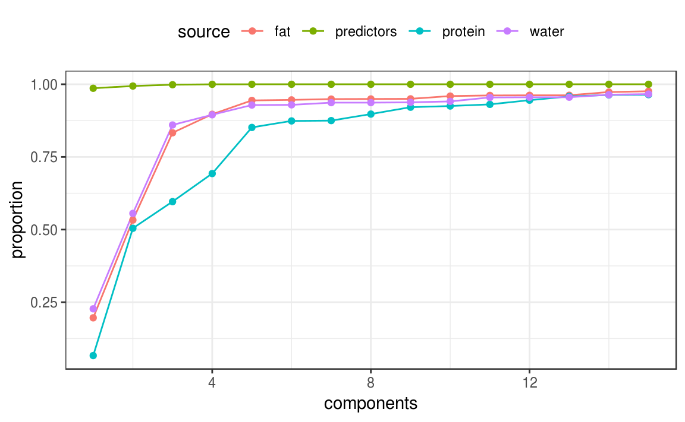

vignettes/articles/Multivariate_PLS.Rmd
Multivariate_PLS.RmdMultivariate Analysis usually refers to the situation where multiple outcomes are being modeled, analyzed, and/or predicted. There are multivariate versions of many common statistical tools. For example, suppose there was a data set with columns y1 and y2 containing two outcomes to be predicted. The lm function would look something like:
The cbind is pretty awkward and is a consequence of how the traditional formula infrastructure works. recipes is a lot easter to work with and this document shows an example to illustrate how to use multiple outcomes.
The data that we’ll use has three outcomes. From ?tecator:
"These data are recorded on a Tecator Infratec Food and Feed Analyzer working in the wavelength range 850 - 1050 nm by the Near Infrared Transmission (NIT) principle. Each sample contains finely chopped pure meat with different moisture, fat and protein contents.
“For each meat sample the data consists of a 100 channel spectrum of absorbances and the contents of moisture (water), fat and protein. The absorbance is
-log10of the transmittance measured by the spectrometer. The three contents, measured in percent, are determined by analytic chemistry.”
The goal would be to be able to predict the proportion of the three substances using the chemistry test. For the predictors, there is usually a very high degree of between-variable correlations in the data and that is certainly the case here.
To start, let’s take the two data matrices (called endpoints and absorp) and bind them together in a data frame:
## [1] 215 3## [1] 215 100colnames(endpoints) <- c("water", "fat", "protein")
colnames(absorp) <- names0(ncol(absorp))
tecator <- cbind(endpoints, absorp) %>%
as.data.frame()The three outcomes have fairly high correlations also. If the outcomes can be predicted using a linear model, partial least squares (PLS) is an idea method. PLS models the data as a function of a set of unobserved latent variables that are derived in a manner similar to principal component analysis (PCA).
PLS, unlike PCA, also incorporates the outcome data when creating the PLS components. Like PCA it tries to maximize the variance of the predictors that are explained by the components but also tries to simultaneously maximize the correlation between those components and the outcomes. In this way, PLS chases variation of the predictors and outcomes.
Since we are working with variances and covariances, it makes sense to standardize the data. The recipe will center and scale all of the variables.
Many base R functions that deal with multivariate outcomes using the formula require the use of cbind on the left-hand side of the formula to work with the traditional formula methods. recipes do not; the outcomes can be symbolically “added” together on the left-hand side:
library(recipes)
norm_rec <- recipe(water + fat + protein ~ ., data = tecator) %>%
step_center(everything()) %>%
step_scale(everything())Before we can finalize the PLS model, the number of PLS components to retain must be determined. This can be done using performance metrics such as the root mean squared error. However, we can also calculate the proportion of variance explained by the components for the predictors and each of the outcomes. This allows an informed choice to be made based on the level of evidence that the situation requires.
Since the data set isn’t large, resampling will be used to measure these proportions. Ten repeats of 10-fold cross-validation will be used to build the PLS model on 90% of the data. For each of the 100 models, the proportions will be extracted and saved.
The folds can be created using the rsample package and the recipe can be estimated for each resample using the prepper function:
library(rsample)
library(purrr)
set.seed(57343)
folds <- vfold_cv(tecator, repeats = 10)
folds <- folds %>%
mutate(recipes = map(splits, prepper, recipe = norm_rec))The complicated part here is:
pls package requires, andFor the first part, the standardized outcomes and predictors will need to be formatted into two separate matrices. Since we used retain = TRUE when prepping the recipes, the juice function can be used. To save the data as a matrix, the option composition = "matrix" will avoid saving the data as tibbles and use the required format.
The pls wants to use a simple formula to specify the model but each side of the formula should represent a matrix. In other words, we need a data from with two columns and each column is a matrix. The secret to doing this is to “protect” the two matrices using I() when adding them to the data frame.
The calculation for the proportion of variance explained is simple for the predictors; the function pls::explvar will compute that. For the outcomes, the process is more complicated. I didn’t see a ready-made function to compute these but there is some code inside of the summary function to do the computation (see below).
The function get_var_explained will do these computations and return a data frame with columns components, source (for the predictors, water, etc) and the proportion of variance that is explained by the components.
library(pls)
get_var_explained <- function(recipe, ...) {
# Extract the predictors and outcomes into their own matrices
y_mat <- juice(recipe, composition = "matrix", all_outcomes())
x_mat <- juice(recipe, composition = "matrix", all_predictors())
# The pls package prefers the data in a data frame where the outcome
# and predictors are in _matrices_. To make sure this is formatted
# properly, use the `I` function to inhibit `data.frame` from making
# all the individual columns. `pls_format` should have two columns.
pls_format <- data.frame(
endpoints = I(y_mat),
measurements = I(x_mat)
)
# Fit the model
mod <- plsr(endpoints ~ measurements, data = pls_format)
# Get the proportion of the predictor variance that is explained
# by the model for different number of components.
xve <- explvar(mod)/100
# To do the same for the outcome, it is more complex. This code
# was extracted from pls:::summary.mvr.
explained <- drop(pls::R2(mod, estimate = "train", intercept = FALSE)$val) %>%
# transpose so that components are in rows
t() %>%
as.data.frame() %>%
# Add the predictor proportions
mutate(predictors = cumsum(xve) %>% as.vector(),
components = seq_along(xve)) %>%
# Put into a tidy format that is tall
gather(source, proportion, -components)
}We compute this data frame for each resample and save the results in different columns.
To extract and aggregate these data, simple row binding can be used to stack the data vertically. Most of the action happens in the first 15 components so the data are filtered and the average proportion is computed.
variance_data <- bind_rows(folds[["var"]]) %>%
filter(components <= 15) %>%
group_by(components, source) %>%
summarize(proportion = mean(proportion))The plot below shows that, if the protein measurement is important, you might require 10 or so components to achieve a good representation of that outcome. Note that the predictor variance is captured extremely well using a single component. This is due to the high degree of correlation in those data.
library(ggplot2)
ggplot(variance_data, aes(x = components, y = proportion, col = source)) +
geom_line() +
geom_point() +
theme_bw() +
theme(legend.position = "top")